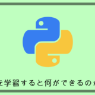
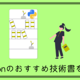

この記事を読んでくれているIT意識が高いであろう人(?)は「ひろゆき」さんを知らない人はいないと思います。
「2ちゃんねる」や「ニコニコ動画」といった有名Webサービスを立ち上げて現在は数々のメディアに出演されているあのひろゆきさんです。
YouTubeのライブ配信や切り抜き動画を止め時がわからず無限再生させられてしまっている人はかなり多いのではないでしょうか。
そんなひろゆきさんですが、ディベート対決や議論の場での論争で負け知らずの論破王としても有名で、これまで多くの名言、論破ワードを生み出しています。
そこで今回はその数々の名言を解析してそれを元にあたかもひろゆきさんが言ってそうな文章を新しく自動生成してみたら面白いのでは？という内容です。
一見難しそうな事をしていると思われるかもしれないですが、Pythonを使えば簡単に実装することができてしまいます。
ソースコードも公開しているので是非最後まで読んでみてください。
Pythonについてよくわからない方やインストール方法を知りたい方は「【初心者向け】Pythonを学習すると何ができるのかとインストール方法を解説」を参考にしてみてください。
【初心者向け】Pythonを学習すると何ができるのかとインストール方法を解説目次
形態素解析とは、ある文章を形態素と呼ばれる意味が通じる最小単位の単語まで分割する技術の事です。
今やGoogle翻訳やYouTubeなどで複数言語の自動翻訳が当たり前になっていますが、これはこの形態素解析の技術が発展したことで可能になっています。
日本語は英語の様に文章の中に単語毎にスペースを入れる言語仕様ではないので、コンピュータが自動で品詞を分割するのが難しく翻訳の難易度が高い部類の言語なのですが、Pythonには日本語に特化した形態素解析用のライブラリが複数存在します。
今回は京都大学などによって開発されたMecabというフリーの日本語の形態素解析エンジンを使ってひろゆきさんの名言を解析していきます。
例えば、「なんだろう、嘘つくのやめてもらっていいですか？」をMecabを使ってで形態素解析すると下記の様になります。
$ mecab
なんだろう、嘘つくのやめてもらっていいですか？
なん 名詞,代名詞,一般,*,*,*,なん,ナン,ナン
だろ 助動詞,*,*,*,特殊・ダ,未然形,だ,ダロ,ダロ
う 助動詞,*,*,*,不変化型,基本形,う,ウ,ウ
、 記号,読点,*,*,*,*,、,、,、
嘘 名詞,一般,*,*,*,*,嘘,ウソ,ウソ
つく 動詞,自立,*,*,五段・カ行イ音便,基本形,つく,ツク,ツク
の 名詞,非自立,一般,*,*,*,の,ノ,ノ
やめ 動詞,自立,*,*,一段,連用形,やめる,ヤメ,ヤメ
て 助詞,接続助詞,*,*,*,*,て,テ,テ
もらっ 動詞,非自立,*,*,五段・ワ行促音便,連用タ接続,もらう,モラッ,モラッ
て 助詞,接続助詞,*,*,*,*,て,テ,テ
いい 形容詞,非自立,*,*,形容詞・イイ,基本形,いい,イイ,イイ
です 助動詞,*,*,*,特殊・デス,基本形,です,デス,デス
か 助詞,副助詞／並立助詞／終助詞,*,*,*,*,か,カ,カ
？ 記号,一般,*,*,*,*,？,？,？
EOSこの様に、文章を意味を持つ最小単位まで分割して品詞なども教えてくれます。
これを使って今回はひろゆきさんの名言をどんどん形態素解析していって次に説明するマルコフ連鎖用の部品を増やしていきます。
マルコフ連鎖とは、確率論の手法で次の状態が現在の状態からのみ決まる関係の事を言います。
文字にすると全然理解できないと思いますし、正直これを書いている自分もよく分かっていないです。
詳細を知りたい方はwikipediaに定義が緻密に記載されています。
https://ja.wikipedia.org/wiki/%E3%83%9E%E3%83%AB%E3%82%B3%E3%83%95%E9%80%A3%E9%8E%96
とはいえ全てwikipediaに丸投げはどうかと思うので、分からないなりに振り絞って分かりやすく説明してみようと思います。
超簡単な例として、下記の2つの例文があるとします。
- 僕はラーメンが食べたい
- 僕は焼き肉が好き
この2つの文章を先程のMecabを使って意味を持つ最小単位の文節（形態素）に区切ると、
- 僕 / は / ラーメン / が / 食べたい
- 僕 / は / 焼き肉 / が / 好き
となり、それをマルコフ連鎖のモデルに起こすとこうなります。

これを見ると、どちらの文章も文頭の「僕」の後は「は」が100%の確率で続いているのが分かります。
次に「は」の次にはそれぞれ50%の確率で「ラーメン」または「焼き肉」が続いているのが分かります。
そのまた次に「ラーメン」と「焼き肉」の後には「が」が100%の確率で続いています。
最後に「が」の次に「食べたい」または「好き」が50%の確率で続いています。
この様に確率論によって前の状態から次の状態へ次々と状態を生成していくという動きを一つ一つの文節で繰り返していきます。
このモデルでは、
- 文頭は「僕」から
- 100%の確率で「は」を引く
- 50%の確率で「ラーメン」を引く
- 100%の確率で「が」を引く
- 50%の確率で「好き」を引く
という確率を引くことによって、
僕はラーメンが好き
という新しい文章を生成できるわけです。
流石にこの例では全く目新しい文章は生成できませんが、今回はこの手法を使って形態素解析したひろゆきさんの数々の名言をパズルの様に組み合わせていき、あたかもひろゆきさんが言ってそうな文章を生成してみます。
pip install mecab-python3
pip install markovify軽くコメントを記載しているのでコード量増えてますけど、大体80行くらいです。
これ名言か？と思われるのもあると思いますが、それあなたの感想ですよね？
import MeCab
import markovify
def main():
# ひろゆきの名言を配列でぶちこむ
meigen = [
'たいていのことは検索すれば答えが出てくるわけで、個人の知識として蓄える必要があるモノってなかなか無いんですよね。',
'みんなが知らない自分だけが知っている知識があるときこそ、自分の価値が上がるわけです。',
'人間って基本死ぬまでの暇つぶしなんですよ。',
'ネット上には「音声じゃないデータ」のほうが圧倒的に多いんですよね。やっぱり、ウィキペディアとかで見たほうが手っ取り早い。',
'嘘は見抜ける人でないと掲示板を使うのは難しい。',
'事故物件っていいですよねビデオ回してワンちゃん何か撮れたらYouTubeとかですげー再生数伸びるんで。',
'「話しするの得意です」って言ってる人で面白かった人見たことないですよね。',
'必要なプライドってありません。',
'頭悪いんだから独学止めた方がいいっすよ。',
'議論とか論破とか説得みたいな話しってあるんだけど一番上手い奴らは宗教家だと思ってます。'
]
mecab = MeCab.Tagger()
# 上手く解釈できない文字列を定義しておく
breaking_chars = ['(', ')', '[', ']', '"', "'"]
# 最終的に1文に収めるための変数
splitted_meigen = ''
for line in meigen:
print('Line : ', line)
# lineの文字列をパースする
parsed_nodes = mecab.parseToNode(line)
while parsed_nodes:
try:
# 上手く解釈できない文字列は飛ばす
if parsed_nodes.surface not in breaking_chars:
splitted_meigen += parsed_nodes.surface
# 句読点以外であればスペースを付与して分かち書きをする
if parsed_nodes.surface != '。' and parsed_nodes.surface != '、':
splitted_meigen += ' '
# 句点が出てきたら文章の終わりと判断して改行を付与する
if parsed_nodes.surface == '。':
splitted_meigen += '\n'
except UnicodeDecodeError as error:
print('Error : ', line)
finally:
# 次の形態素に上書きする。なければNoneが入る
parsed_nodes = parsed_nodes.next
print('解析結果 :\n', splitted_meigen)
# マルコフ連鎖のモデルを作成
model = markovify.NewlineText(splitted_meigen, state_size=2)
# 文章を生成する
sentence = model.make_sentence(tries=100)
if sentence is not None:
# 分かち書きされているのを結合して出力する
print('---------------------------------------------------')
print(''.join(sentence.split()))
print('''
＿＿_＿
／へへ ＼
／／⌒⌒＼ ＼
/ / ヽ ヽ
｜｜ヽ ／⌒ | |
ﾚY-･／ -･- ヽ |
| / Ｖ) |
|(＿つ ･ 丿ノ
|＜三三＞) / /
ヽ ﾞﾞ ／ﾚｿ
＼从ww／ ｜
/)￣ ∧
／ﾚヽ ／ |＼
｜| | ｜⌒ |｜
''')
print('---------------------------------------------------')
else:
print('None')
if __name__ == "__main__":
main()
よりそれっぽく見せる為にAAもprintさせておきました。
実行結果はこの様な感じになります。
Line : たいていのことは検索すれば答えが出てくるわけで、個人の知識として蓄える必要があるモノってなかなか無いんですよね。
Line : みんなが知らない自分だけが知っている知識があるときこそ、自分の価値が上がるわけです。
Line : 人間って基本死ぬまでの暇つぶしなんですよ。
Line : ネット上には「音声じゃないデータ」のほうが圧倒的に多いんですよね。やっぱり、ウィキペディアとかで見たほうが手っ取り早い。
Line : 嘘は見抜ける人でないと掲示板を使うのは難しい。
Line : 事故物件っていいですよねビデオ回してワンちゃん何か撮れたらYouTubeとかですげー再生数伸びるんで。
Line : 「話しするの得意です」って言ってる人で面白かった人見たことないですよね。
Line : 必要なプライドってありません。
Line : 頭悪いんだから独学止めた方がいいっすよ。
Line : 議論とか論破とか説得みたいな話しってあるんだけど一番上手い奴らは宗教家だと思ってます。
解析結果 :
たいてい の こと は 検索 すれ ば 答え が 出 て くる わけ で 、個人 の 知識 と し て 蓄える 必要 が ある モノ って なかなか 無い ん です よ ね 。
みんな が 知ら ない 自分 だけ が 知っ て いる 知識 が ある とき こそ 、自分 の 価値 が 上がる わけ です 。
人間 って 基本 死ぬ まで の 暇つぶし な ん です よ 。
ネット 上 に は 「 音声 じゃ ない データ 」 の ほう が 圧倒 的 に 多い ん です よ ね 。
やっぱり 、ウィキペディア と か で 見 た ほう が 手っ取り 早い 。
嘘 は 見抜ける 人 で ない と 掲示 板 を 使う の は 難しい 。
事故 物件 って いい です よ ね ビデオ 回し て ワン ちゃん 何 か 撮れ たら YouTube と か で すげー 再生 数 伸びる ん で 。
「 話し する の 得意 です 」 って 言っ てる 人 で 面白かっ た 人 見 た こと ない です よ ね 。
必要 な プライド って あり ませ ん 。
頭 悪い ん だ から 独学 止め た 方 が いい っす よ 。
議論 と か 論破 と か 説得 みたい な 話し って ある ん だ けど 一番 上手い 奴 ら は 宗教 家 だ と 思っ て ます 。
---------------------------------------------------
みんなが知らない自分だけが知っている知識があるモノってなかなか無いんですよね。
＿＿_＿
／へへ ＼
／／⌒⌒＼ ＼
/ / ヽ ヽ
｜｜ヽ ／⌒ | |
ﾚY-･／ -･- ヽ |
| / Ｖ) |
|(＿つ ･ 丿ノ
|＜三三＞) / /
ヽ ﾞﾞ ／ﾚｿ
＼从ww／ ｜
/)￣ ∧
／ﾚヽ ／ |＼
｜| | ｜⌒ |｜
---------------------------------------------------みんなが知らない自分だけが知っている知識があるモノってなかなか無いんですよね。
おー、なるほどな？？
どうですかね？なんかそれっぽい文章が作れたのではないでしょうか。
おもろいのでもっとプログラム回してみます。
- 議論とか説得みたいな話しってあるんだから独学止めた方がいいっすよ。
- やっぱり、ウィキペディアとか論破とか論破とか説得みたいな話しってあるんだから独学止めた方がいいっすよ。
- やっぱり、ウィキペディアとか論破とかで見たほうが手っ取り早い。
- 議論とか論破とか説得みたいな話しってあるんだから独学止めた方がいいっすよ。
- 議論とか論破とか論破とかで見たほうが手っ取り早い。
今回10個の名言しか配列に入れていないので、ある程度偏りが出たのかなと感じますがもっと増やせば本家ばりのバリエーションと語彙力豊かなひろゆきさんが生成できると思います。
深夜テンションで考えたネタだったのですが案外面白いプログラムが作れたのではないでしょうか。
今回はひろゆきさんを選びましたが、他の有名人でも同じ様にそれっぽい文章が作れるので色々いじって遊んでみてください。
このブログではこんな感じでPython関係の記事も上げているのでよければ他の記事も見てみてもらえると嬉しいです！
【必読】Pythonで仕事を取りたければ絶対読んでおきたいおすすめ技術書を紹介！ 【Python】Django3.2でHelloWorldまでを初学者向けに丁寧に解説していく！
【Python】Django3.2でHelloWorldまでを初学者向けに丁寧に解説していく！
Xserver(Linux)にPythonプログラムを常時実行させる方法を解説！
PythonプログラムとFirestoreを接続して気軽にデータベースを利用する方法を解説!
おわり
初こめです
面白いものを見させてもらいました
このコード死んでゆくおじいちゃんの言葉口癖を
研究して声を録音して生きてる婆さんの耳に『おじいさんが生きてる』
的なモノできないですかね
スピーカー繋いだラズベリーパイで
ビジネスになりませんかね？（＾＾）
コメントありがとうございます！
そこまで来るともうAI感すごいですね。
ちょうどラズベリーパイ買ってみようと思っていたので参考にさせてもらいます！